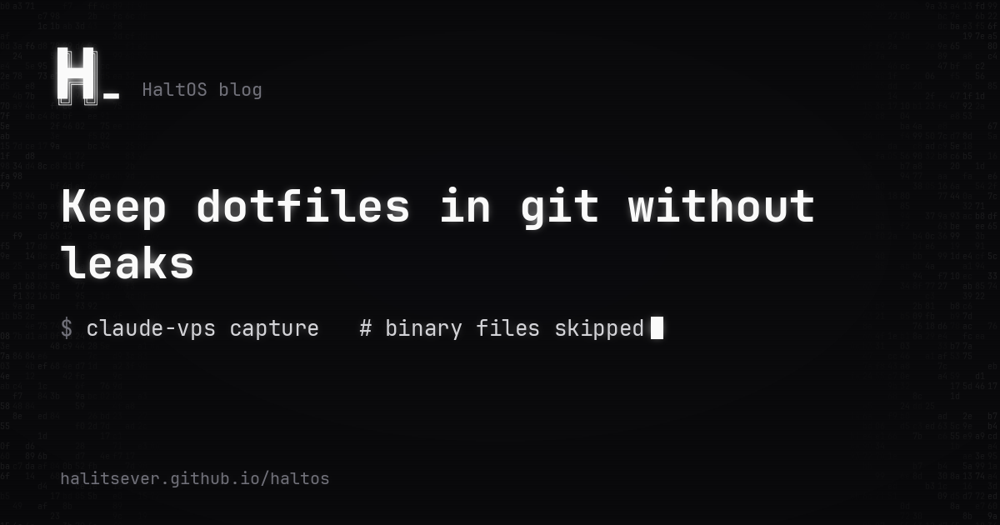

Keep your dotfiles in git without leaking private files

Publishing your KDE and Claude Code config to a git repository lets every new server look and behave like your own on the first login. It also makes it very easy to publish something you did not mean to. These are the guard rails claude-code-vps uses.
Capture, publish, sync
On your main machine, claude-vps capture copies the files listed in a manifest into the repository and publish commits and pushes them. Servers run claude-vps sync, by hand or every 30 minutes with a systemd timer, which pulls and applies them. Every file it replaces is backed up first.
Only what you list
Nothing is captured unless it is in the manifest. Credentials are simply never listed: Claude Code's credentials, SSH keys, KWallet and browser profiles stay out by design rather than by filter.
Scrub what you do capture
Config files are full of your home directory and your recent files. Capture replaces the home path with @HOME@, which apply turns back into the right path for each user, and drops whole sections whose names mention recent files or history.
Never capture binary files
A folder such as ~/.local/share/wallpapers can hold a private photo, and a binary file cannot be scrubbed. So capture skips every binary file, even inside a listed folder, and says so:
! skipped binary file .local/share/wallpapers/beach.jpgKeep some files per machine
Some files should never sync, because they hold machine-specific notes or because another tool owns them. List them in ~/.config/claude-vps/local-only: apply leaves them alone, and capture keeps whatever the repository already had instead of taking this machine's copy.
# ~/.config/claude-vps/local-only
.claude/settings.json
# >>> haltos
.config/kdeglobals
.config/plasma-org.kde.plasma.desktop-appletsrc
# <<< haltosHaltOS uses exactly this: it claims its theme files in a marked block, so a sync never undoes the theme and a publish never pushes it into your public dotfiles.
Let other tools react
Executables in ~/.config/claude-vps/post-apply.d/ run after a sync that changed files. That is how a layer like HaltOS puts its panel back after a sync without either project knowing much about the other.
All posts Next: Why a monochrome desktop works for AI coding